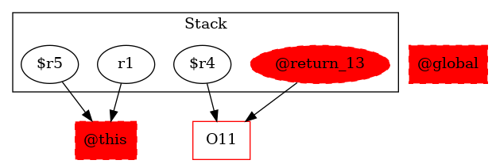

-1 : r1 := @this: TestMidsem
11 : $r4 = new testcase.TestMidsem$NodeMidesem
-1 : $r5 = (testcase.TestMidsem) r1
11 : specialinvoke $r4.|testcase.TestMidsem$NodeMidesem: void |init|(testcase.TestMidsem)|($r5)
13 : return $r4 ->class soot.jimple.internal.JReturnStmt {getOp: class soot.jimple.internal.JimpleLocal}
